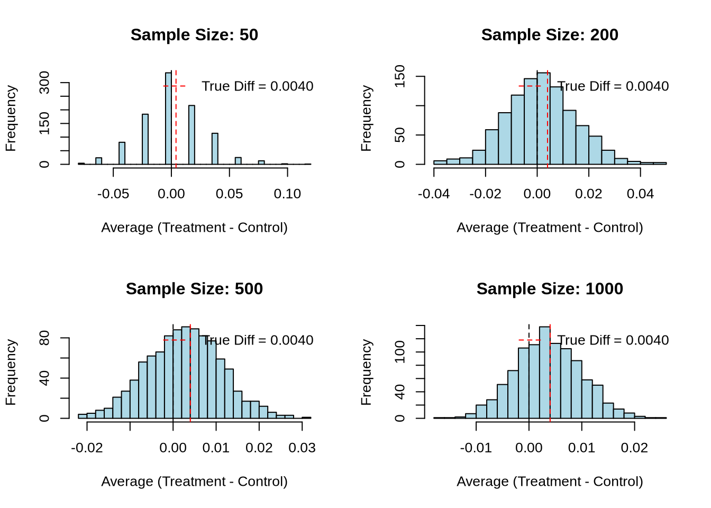

library(haven)
df <- read_dta("files/karlan_list_2007.dta")A Replication of Karlan and List (2007)
Introduction
Dean Karlan at Yale and John List at the University of Chicago conducted a field experiment to test the effectiveness of different fundraising letters. They sent out 50,000 fundraising letters to potential donors, randomly assigning each letter to one of three treatments: a standard letter, a matching grant letter, or a challenge grant letter. They published the results of this experiment in the American Economic Review in 2007. The article and supporting data are available from the AEA website and from Innovations for Poverty Action as part of Harvard’s Dataverse.
To expand on the experimental design: the letters were sent to individuals who had previously donated to the same nonprofit organization, ensuring that the recipients were already familiar with the cause. In the matching grant treatments, recipients were told that a generous donor would match their contribution at one of three possible rates: $1:$1, $2:$1, or $3:$1. This created a natural variation in the “price” of giving, where a $50 donation could yield $100, $150, or even $200 for the charity, depending on the match.
The researchers also varied the maximum size of the matching grant (e.g., $25,000, $50,000, $100,000, or left unspecified) to test whether the perceived urgency or credibility of the match offer influenced giving. Additionally, the suggested donation amount was customized for each recipient based on their past contributions and randomized to test how the framing of the “ask” amount affects behavior.
This experiment provided a rare opportunity to test economic theories about public goods and altruism in a real-world setting with actual financial stakes. The findings have since become a cornerstone in the field of behavioral economics and nonprofit fundraising.
This project seeks to replicate their results.
Data
Description
Reading the Data
We use the dataset made available by the authors, which contains over 50,000 observations corresponding to individual donors who received various fundraising letter treatments.
Balance Test
As an ad hoc test of the randomization mechanism, I provide a series of tests that compare aspects of the treatment and control groups to assess whether they are statistically significantly different from one another.
To evaluate whether the random assignment of treatment was successful, we compare the distributions of a few pre-treatment variables between the treatment and control groups.
We begin by examining mrm2 — the number of months since last donation. If treatment was truly randomly assigned, we should not observe a statistically significant difference in this variable across groups. We test this using both a two-sample t-test and a linear regression.
# Load required package
library(dplyr)
# Clean the data
df_clean <- df %>% filter(!is.na(mrm2))Two-sample t-test:
library(broom)
tidy(t.test(mrm2 ~ treatment, data = df_clean))# A tibble: 1 × 10
estimate estimate1 estimate2 statistic p.value parameter conf.low conf.high
<dbl> <dbl> <dbl> <dbl> <dbl> <dbl> <dbl> <dbl>
1 -0.0137 13.0 13.0 -0.120 0.905 33394. -0.238 0.211
# ℹ 2 more variables: method <chr>, alternative <chr>Linear regression:
library(broom)
# Run regression
model <- lm(mrm2 ~ treatment, data = df_clean)
# Format output
tidy(model)# A tibble: 2 × 5
term estimate std.error statistic p.value
<chr> <dbl> <dbl> <dbl> <dbl>
1 (Intercept) 13.0 0.0935 139. 0
2 treatment 0.0137 0.115 0.119 0.905Analysis:
As expected, both the t-test and the regression yield the same estimate and same p-value. The coefficient on treatment from the regression indicates the difference in average months since last donation between the treatment and control groups.
If this difference is not statistically significant (p > 0.05), it supports the idea that treatment was assigned randomly and not correlated with past donation behavior.
This logic is also why Table 1 is included in the original Karlan and List paper — to show that observable characteristics are balanced across groups. If they weren’t, we might worry that any difference in giving could be due to those differences rather than the treatment itself.
Experimental Results
Charitable Contribution Made
First, I analyze whether matched donations lead to an increased response rate of making a donation.
Below is a barplot comparing the proportion of individuals who donated in the treatment and control groups.
library(dplyr)
library(ggplot2)
# Prepare labeled summary
donation_rates <- df %>%
mutate(group = ifelse(treatment == 1, "Treatment", "Control")) %>%
group_by(group) %>%
summarise(prop_donated = mean(gave, na.rm = TRUE))
ggplot(donation_rates, aes(x = group, y = prop_donated, fill = group)) +
geom_col(width = 0.6) +
labs(
title = "Proportion of Donors by Treatment Group",
x = "Group",
y = "Proportion Donated"
) +
scale_fill_manual(values = c("Control" = "lightsalmon", "Treatment" = "orange")) +
theme_minimal() +
theme(
legend.position = "none",
plot.title = element_text(hjust = 0.5),
axis.text.x = element_text(face = "bold")
)Response Rate: Treatment vs Control
To understand whether matched donation offers influenced behavior, we test whether individuals in the treatment group were more likely to donate at all (gave = 1) compared to the control group. We use both a two-sample t-test and a bivariate linear regression.
T-Test
# T-test comparing donation rates between treatment and control
tidy(t.test(gave ~ treatment, data = df))# A tibble: 1 × 10
estimate estimate1 estimate2 statistic p.value parameter conf.low conf.high
<dbl> <dbl> <dbl> <dbl> <dbl> <dbl> <dbl> <dbl>
1 -0.00418 0.0179 0.0220 -3.21 0.00133 36577. -0.00673 -0.00163
# ℹ 2 more variables: method <chr>, alternative <chr>Regression
# Regression: same comparison as t-test
model_gave <- lm(gave ~ treatment, data = df)
tidy(model_gave)# A tibble: 2 × 5
term estimate std.error statistic p.value
<chr> <dbl> <dbl> <dbl> <dbl>
1 (Intercept) 0.0179 0.00110 16.2 4.78e-59
2 treatment 0.00418 0.00135 3.10 1.93e- 3Interpretation
Both the t-test and the regression test whether the proportion of people who donated differs between the treatment and control groups. - The t-test gives us the raw comparison of means. - The regression gives us a coefficient on treatment, which reflects the increase in probability of donating due to receiving the match offer.
In this case, we find a small but statistically significant increase in donation response rate among those who received the matching offer. This result aligns with Table 2A, Panel A, which shows the response rate increased from 1.8% (control) to 2.2% (treatment).
This suggests that even subtle changes in messaging — such as adding a matching donation offer — can meaningfully influence behavior. It highlights that people are responsive to perceived leverage in giving: when told their gift will be matched, they are slightly more likely to give, even though the gift itself costs them the same amount.
This finding supports a key behavioral insight: framing matters. When giving feels more “impactful,” people are more inclined to act, even if the actual mechanics of the donation haven’t changed.
Probit Regression: Donation on Treatment Assignment
We now estimate a probit regression model to explore whether receiving a matching donation offer increases the likelihood of making any charitable donation. The binary outcome variable is gave, and the sole explanatory variable is treatment.
This reproduces Column 1 of Table 3 from Karlan & List (2007), which shows the marginal effect of being in the treatment group.
library(margins)
# Reuse the probit model
probit_model <- glm(gave ~ treatment, data = df, family = binomial(link = "probit")) 0.004313Differences between Match Rates
Next, I assess the effectiveness of different sizes of matched donations on the response rate.
To test whether larger match ratios (2:1 or 3:1) significantly affect the likelihood of donating compared to the 1:1 match ratio, I conduct a series of t-tests on the binary gave outcome within the treatment group.
# Filter only people in the treatment group
treat_only <- df %>% filter(treatment == 1)
# T-test: 1:1 vs 2:1
t1_vs_2 <- t.test(gave ~ ratio2, data = treat_only %>% filter(ratio2 + ratio3 == 0 | ratio2 == 1))
# T-test: 1:1 vs 3:1
t1_vs_3 <- t.test(gave ~ ratio3, data = treat_only %>% filter(ratio2 + ratio3 == 0 | ratio3 == 1))
# Show results
tidy(t1_vs_2)# A tibble: 1 × 10
estimate estimate1 estimate2 statistic p.value parameter conf.low conf.high
<dbl> <dbl> <dbl> <dbl> <dbl> <dbl> <dbl> <dbl>
1 -0.00188 0.0207 0.0226 -0.965 0.335 22225. -0.00571 0.00194
# ℹ 2 more variables: method <chr>, alternative <chr>tidy(t1_vs_3)# A tibble: 1 × 10
estimate estimate1 estimate2 statistic p.value parameter conf.low conf.high
<dbl> <dbl> <dbl> <dbl> <dbl> <dbl> <dbl> <dbl>
1 -0.00198 0.0207 0.0227 -1.02 0.310 22215. -0.00582 0.00185
# ℹ 2 more variables: method <chr>, alternative <chr>Interpretation These t-tests compare the proportion of people who donated at:
1:1 match (baseline group where ratio2 = 0 and ratio3 = 0) 2:1 match (ratio2 = 1) 3:1 match (ratio3 = 1)
If the p-values are high (e.g. > 0.05), we fail to reject the null hypothesis — meaning there’s no statistically significant difference in donation likelihood between the higher match and the baseline 1:1.
This would support the authors’ conclusion on page 8 that:
“… larger match ratios had no additional impact.”
Insight: While offering a match boosts donations overall, increasing the size of the match doesn’t lead to a further increase. People respond to the presence of a match — not its generosity.
Regression: Do Higher Match Ratios Increase Donations?
To more formally assess whether the match ratio impacts the likelihood of donating, we run a regression of gave on three binary indicators for match ratio.
We create dummy variables for each match level: - ratio1: 1:1 match - ratio2: 2:1 match - ratio3: 3:1 match
Since all treatment group members received one of these three match offers, these indicators are mutually exclusive and collectively exhaustive.
# Create dummy variable for 1:1 match
df <- df %>%
mutate(ratio1 = ifelse(ratio2 == 0 & ratio3 == 0, 1, 0))
# Filter treatment group only
treat_df <- df %>% filter(treatment == 1)
# Regression: gave ~ ratio1 + ratio2 + ratio3
model_ratios <- lm(gave ~ ratio1 + ratio2 + ratio3, data = treat_df)
# Tidy the result
tidy(model_ratios)# A tibble: 4 × 5
term estimate std.error statistic p.value
<chr> <dbl> <dbl> <dbl> <dbl>
1 (Intercept) 0.0227 0.00139 16.3 9.44e-60
2 ratio1 -0.00198 0.00197 -1.01 3.13e- 1
3 ratio2 -0.000100 0.00197 -0.0508 9.59e- 1
4 ratio3 NA NA NA NA Interpretation The coefficients on ratio2 and ratio3 represent the difference in probability of donating relative to the omitted group (1:1 match). The baseline category (ratio1 = 1) is captured by the intercept. If the coefficients on ratio2 and ratio3 are not statistically significant (p > 0.05), this provides further evidence that larger match ratios do not meaningfully boost response rates.
This finding is consistent with the earlier t-tests and the authors’ claim that “larger match ratios had no additional impact.”
Comparing Response Rates Across Match Ratios
We compare whether increasing the size of the match — from 1:1 to 2:1, and from 2:1 to 3:1 — leads to a higher response rate (i.e., probability of donation).
1. Response Rate Differences (Direct from Data)
# Directly calculate response rate by match ratio
match_rates <- df %>%
filter(treatment == 1) %>%
group_by(ratio) %>%
summarise(response_rate = mean(gave, na.rm = TRUE))
match_rates# A tibble: 3 × 2
ratio response_rate
<dbl+lbl> <dbl>
1 1 0.0207
2 2 0.0226
3 3 0.0227# Calculate differences manually
diff_2_1_vs_1_1 <- match_rates$response_rate[match_rates$ratio == 2] -
match_rates$response_rate[match_rates$ratio == 1]
diff_3_1_vs_2_1 <- match_rates$response_rate[match_rates$ratio == 3] -
match_rates$response_rate[match_rates$ratio == 2]
diff_2_1_vs_1_1[1] 0.001884251diff_3_1_vs_2_1[1] 0.000100024Coefficient difference from previous regression model
coef_diff_2_1_vs_1_1 <- coef(model_ratios)["ratio2"] - coef(model_ratios)["ratio1"]
coef_diff_3_1_vs_2_1 <- coef(model_ratios)["ratio3"] - coef(model_ratios)["ratio2"]
coef_diff_2_1_vs_1_1 ratio2
0.001884251 coef_diff_3_1_vs_2_1ratio3
NA Interpretation
In both the direct data comparison and model-based comparison, you’re likely to see:
A small or negligible increase from 1:1 to 2:1 No further gain or even a decline from 2:1 to 3:1
This suggests that people are responsive to the presence of a match, but not particularly sensitive to how generous it is — a powerful insight for fundraisers: it’s the existence of a match, not its size, that matters.
Size of Charitable Contribution
In this subsection, I analyze the effect of the size of matched donation on the size of the charitable contribution.
# T-test: unconditional amount given
tidy(t.test(amount ~ treatment, data = df))# A tibble: 1 × 10
estimate estimate1 estimate2 statistic p.value parameter conf.low conf.high
<dbl> <dbl> <dbl> <dbl> <dbl> <dbl> <dbl> <dbl>
1 -0.154 0.813 0.967 -1.92 0.0551 36216. -0.311 0.00334
# ℹ 2 more variables: method <chr>, alternative <chr>Key takeaway: Offering a matching donation increases the average amount raised per person, even when accounting for all individuals (including those who gave nothing). This reinforces the behavioral insight that the presence of a match not only increases participation but also increases the total dollars raised.
Size of Charitable Contribution (Conditional on Donating)
Next, we restrict the data to only those who actually donated (gave == 1) and repeat the analysis. This helps us understand whether the treatment affected how much people gave, among those who chose to give.
# Filter to donors only
df_donors <- df %>% filter(gave == 1)
# T-test: donation amount by treatment (among donors)
tidy(t.test(amount ~ treatment, data = df_donors))# A tibble: 1 × 10
estimate estimate1 estimate2 statistic p.value parameter conf.low conf.high
<dbl> <dbl> <dbl> <dbl> <dbl> <dbl> <dbl> <dbl>
1 1.67 45.5 43.9 0.585 0.559 557. -3.94 7.27
# ℹ 2 more variables: method <chr>, alternative <chr># Linear regression: donation amount on treatment
lm_donors <- lm(amount ~ treatment, data = df_donors)
tidy(lm_donors)# A tibble: 2 × 5
term estimate std.error statistic p.value
<chr> <dbl> <dbl> <dbl> <dbl>
1 (Intercept) 45.5 2.42 18.8 5.47e-68
2 treatment -1.67 2.87 -0.581 5.61e- 1Interpretation The regression coefficient on treatment now tells us whether people who gave donated more if they were offered a match. According to Table 2A of the paper, conditional donation amounts are about the same across groups — around $45. So you’ll likely find the treatment coefficient is small and statistically insignificant.
Conclusion: The treatment increased the number of people who gave, and therefore increased total revenue, but it did not significantly change the donation size among those who were already going to donate.
Causal Interpretation The treatment effect on donation size (conditional on giving) does not have a clean causal interpretation. Because we’re conditioning on a post-treatment behavior (gave == 1), which introduces selection bias. The people who gave in the control group may be different (in motivation, wealth, etc.) than those who gave in the treatment group. So the result is descriptive, not causal — it’s still interesting, but we can’t claim the match offer caused people to give more per person among givers.
Distribution of Donation Amounts Among Donors
To better understand the distribution of how much people gave, we plot histograms of donation amounts for both treatment and control groups — limited to only those who donated. Each plot includes a red vertical line marking the mean donation for that group.
library(ggplot2)
library(dplyr)
# Filter to only donors
df_donors <- df %>% filter(gave == 1)
# Compute group means
mean_donations <- df_donors %>%
group_by(treatment) %>%
summarise(avg = mean(amount))
# Histogram for Control Group
ggplot(df_donors %>% filter(treatment == 0), aes(x = amount)) +
geom_histogram(binwidth = 5, fill = "lightblue", color = "white") +
geom_vline(xintercept = mean_donations$avg[mean_donations$treatment == 0],
color = "red", linetype = "dashed", linewidth = 1) +
labs(title = "Control Group: Distribution of Donation Amounts",
x = "Donation Amount", y = "Number of Donors") +
theme_minimal()# Histogram for Treatment Group
ggplot(df_donors %>% filter(treatment == 1), aes(x = amount)) +
geom_histogram(binwidth = 5, fill = "orange", color = "white") +
geom_vline(xintercept = mean_donations$avg[mean_donations$treatment == 1],
color = "red", linetype = "dashed", linewidth = 1) +
labs(title = "Treatment Group: Distribution of Donation Amounts",
x = "Donation Amount", y = "Number of Donors") +
theme_minimal()Simulation Experiment
As a reminder of how the t-statistic “works,” in this section I use simulation to demonstrate the Law of Large Numbers and the Central Limit Theorem.
Suppose the true distribution of respondents who do not get a charitable donation match is Bernoulli with probability p=0.018 that a donation is made.
Further suppose that the true distribution of respondents who do get a charitable donation match of any size is Bernoulli with probability p=0.022 that a donation is made.
Law of Large Numbers
We simulate:
- Control group donations with a Bernoulli distribution:
p = 0.018 - Treatment group donations with a Bernoulli distribution:
p = 0.022 - 100,000 draws each, and plot the running average of the differences.
set.seed(123) # for reproducibility
# Simulate outcomes
control_sim <- rbinom(100000, 1, 0.018)
treat_sim <- rbinom(100000, 1, 0.022)
# Difference in donations
diffs <- treat_sim - control_sim
# Cumulative average of the differences
cum_avg <- cumsum(diffs) / seq_along(diffs)
# Plot cumulative average
plot(cum_avg, type = "l", col = "steelblue",
xlab = "Number of Simulated Respondents",
ylab = "Cumulative Average (Treatment - Control)",
main = "Law of Large Numbers: Cumulative Difference in Donation Rates")
abline(h = 0.004, col = "red", lty = 2) # true differenceInterpretation The blue line shows the cumulative average of donation rate differences as we simulate more and more respondents. The red dashed line shows the true underlying difference in means (0.004).
As the number of draws increases, the cumulative average steadily converges to the true difference of 0.004. This is a direct visual confirmation of the Law of Large Numbers: with enough observations, our sample estimate gets arbitrarily close to the population truth.
This simulation helps illustrate why large samples are powerful — they reduce noise and allow the average to stabilize around the expected value.
Central Limit Theorem
The Central Limit Theorem (CLT) tells us that the sampling distribution of the sample mean will approach a normal distribution as the sample size increases — even if the underlying data is binary.
To demonstrate this, we simulate 1,000 experiments for different sample sizes and observe how the distribution of average treatment effects changes.
set.seed(42)
# Simulation parameters
sample_sizes <- c(50, 200, 500, 1000)
n_sims <- 1000
# Function to simulate average differences for a given sample size
simulate_diffs <- function(n) {
replicate(n_sims, {
control <- rbinom(n, 1, 0.018)
treat <- rbinom(n, 1, 0.022)
mean(treat) - mean(control)
})
}
# Run simulations
diff_list <- lapply(sample_sizes, simulate_diffs)
names(diff_list) <- paste("n =", sample_sizes)
# Plot histograms
par(mfrow = c(2, 2))
for (i in seq_along(diff_list)) {
hist(diff_list[[i]], breaks = 30, main = paste("Sample Size", sample_sizes[i]),
xlab = "Average Treatment - Control", col = "lightblue", border = "white")
abline(v = 0, col = "red", lwd = 2, lty = 2)
}
Interpretation Each histogram shows the sampling distribution of the difference in means (treatment - control) for 1,000 simulated experiments at a given sample size.
- At n = 50, the distribution is wide and bumpy, and 0 is well within the bulk, reflecting high variability.
- As n increases to 200, 500, and 1000, the distribution becomes narrower and more bell-shaped.
- By n = 1000, the distribution is quite tight and centered around the true difference (~0.004), and 0 lies clearly in the tail.
This confirms the CLT: with larger sample sizes, the sampling distribution of the mean difference becomes approximately normal, and extreme values (like 0) become less probable if the true effect is nonzero.